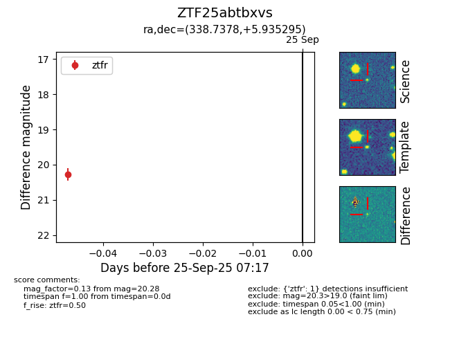

FINK: ZTF25abtbxvs
Lasair: ZTF25abtbxvs
ALeRCE: ZTF25abtbxvs
ZTF25abtbxvs (ztf,fink)
equatorial (ra, dec) = (338.7378,+5.93529)
galactic (l, b) = (72.8909,-43.28864)

last ztfr=20.28
1 ztfr detections